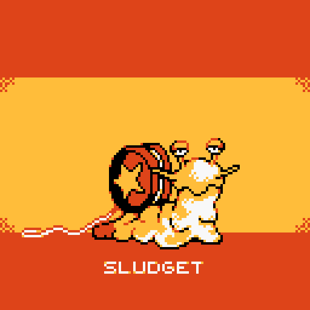
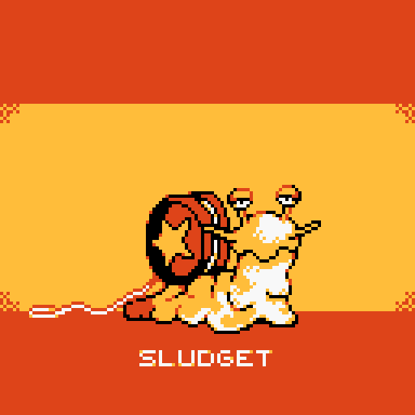
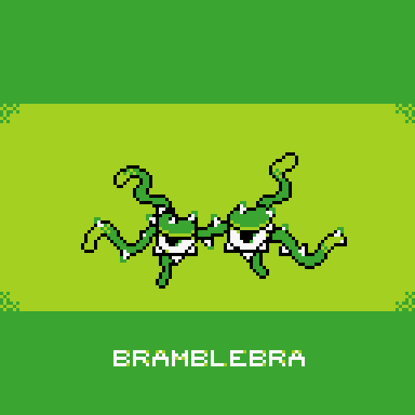
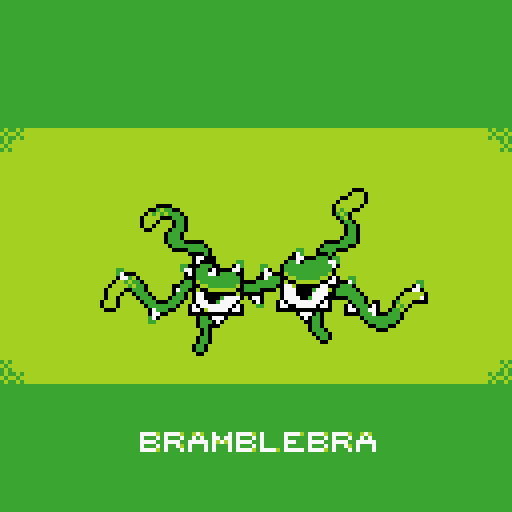
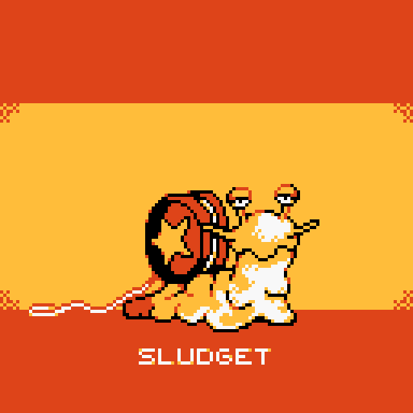
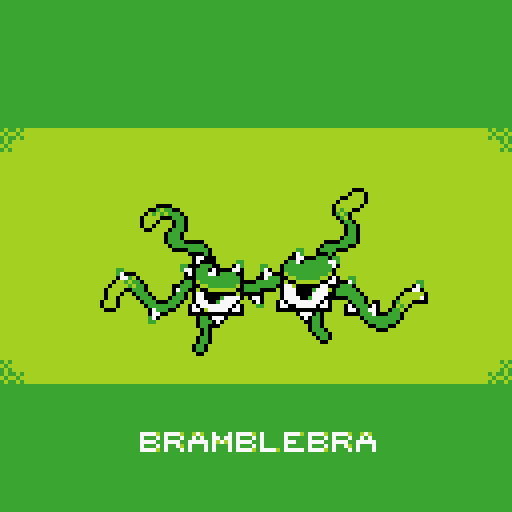

 


This is a collection of monsters I designed and sprited. The common theme amoung them is most are some sort of combination of a plant/animal with a man-made item or concept (ex. slug + yoyo, seal + paint, embroidery + crime, etc).
The art style is meant to be evocative of the one found in Gameboy Color games. Each sprite only uses 4 colors: Black, White, and 2 others.

